设计图册：从请求执行到共享 KV 存储
这份图册集中解释系统的职责、部署、运行、状态和数据关系。图片是已生成的 SVG，普通浏览器可以直接查看；需要调整时可直接编辑 SVG 文件。框架原有的 Mermaid 图放在文末的深读入口。
怎样读图
先问：图描述的是职责、物理部署、执行顺序，还是状态转换？职责分层不等于进程边界，逻辑箭头不等于逐行函数调用，更不保证两个实现可以直接互换。
| 图 | 用来回答什么问题 | 类型 |
|---|---|---|
| D1 | 各层决定什么、持有什么状态？ | 职责架构 |
| D2 | 进程和数据放在哪里，故障会影响谁？ | 部署与数据路径 |
| D3 | 冷请求、本地命中、远端命中怎么运行？ | 运行流程 |
| D4 | 取消和抢占为什么不能直接释放内存？ | 请求状态 |
| D5 | token、page、chunk、object、segment 怎么对应？ | 数据模型 |
| D6 | 对象什么时候可读，失败后如何收尾？ | 读写协议 |
| D7 | PD 分离和跨请求共享分别解决什么？ | 部署取舍 |
| D8 | LMCache 与 Mooncake 的控制、数据路径怎么衔接？ | 实现架构 |
| D9 | 本地完成、远端完成、GPU ready 有什么区别？ | 实现运行链 |
| D10 | 加载超时、租约到期、迟到回调怎样安全收尾？ | 失败时序 |
| D11 | 目录主节点切换后怎样隔离旧主并恢复服务？ | 高可用恢复 |
| D12 | 容量、对象数、流量和故障余量怎样一起规划？ | 容量规划 |
| D13 | 模型或格式升级、多租户隔离怎样灰度与回滚？ | 演进与治理 |
D1 · 推理 Infra 职责架构
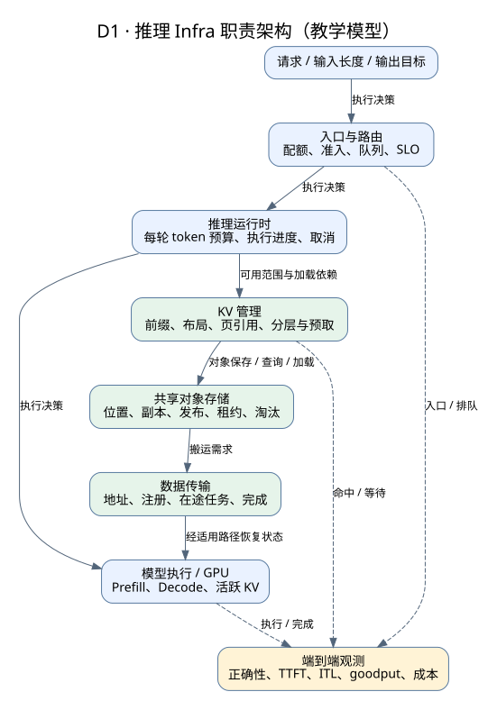
主箭头表示逻辑工作依赖，虚线表示观测。运行时决定算什么，缓存管理决定可复用什么，存储管理对象，传输搬运字节。一次优化可能同时改变多个层的成本，需要把结果落实到用户请求。
专家追问：把缓存控制独立成服务，哪些资源可以独立伸缩，哪些同步与故障依赖反而增加？谁最终决定可以跳过哪些 token？
D2 · 计算、缓存与共享存储部署
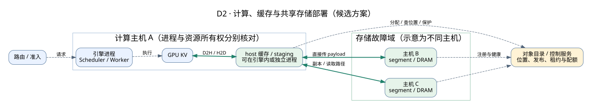
绿色实线表示 payload 路径，虚线表示控制或元数据。图示把副本放在两台主机上，这是候选部署，不代表分配两个 segment 就自动实现跨主机容错。目录服务的 HA、payload 的副本和读取者的临时 buffer 是三件事。
可以把 host 缓存和 Store segment 部署在计算主机上，也可以使用独立存储节点。选择时比较故障耦合、资源争抢、扩容粒度和网络拓扑。
专家追问：计算进程退出、整机退出、机架隔离、目录主节点切换时，哪些已有读取能继续，哪些新请求会阻塞，怎样限制重算风暴？
D3 · 一次请求的三种缓存路径
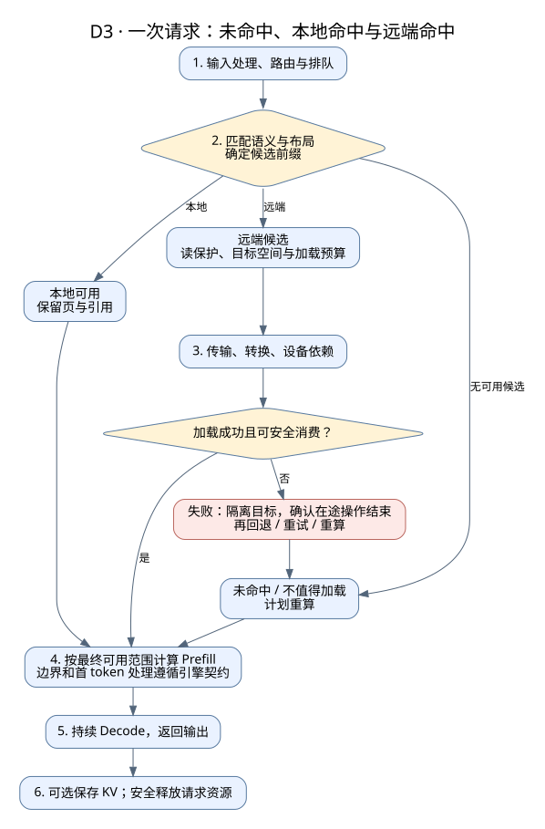
这是一张教学运行图。命中远端只是候选信息，实际加载成功、数据布局正确、设备依赖满足之后，才能使用相应 KV。普通前缀复用失败时要重新确定连续可用范围，不能把零散成功的对象数加起来。
图中把阶段画成串行，是为了说明依赖；实现可以做预取和重叠。完整 prompt 命中也不意味着一定完全跳过首 token 相关计算，边界由引擎协议决定。
专家追问：加载超时但操作仍可能完成，目标 GPU block 应由谁隔离？重算、迟到回调和下一条请求如何避免写到同一位置？
D4 · 请求状态与资源收尾
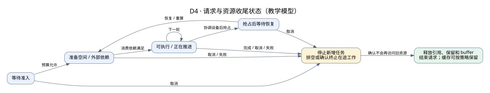
这里的状态名是教学抽象，不是某个引擎的 enum。用户取消请求，只表达“不再需要结果”；已经提交的 GPU/NIC 任务可能仍访问旧资源。请求结束和最后一块资源可回收，不一定发生在同一个时刻。
抢占前同样要协调设备和状态。等待恢复时保存什么、丢弃什么，取决于抢占策略；不能从这张图推断所有引擎都会把 KV 卸载到 CPU。
专家追问：如何设计回调幂等、任务代际、引用和排空协议？一次清理失败如何观测并防止无限泄漏？
D5 · 从逻辑前缀到物理对象

前缀身份解决“是不是同一次计算状态”；group/rank/layout 解决“拿到的数据怎样解释”；segment 和 offset 解决“字节放在哪里”。多个逻辑维度可以组成一个 key，但具体编码方式和字段覆盖范围需要检查实现。
page、chunk、object 和 segment 并不保证一一对应。跨 rank 的完整性与不同 attention group 的窗口语义，需要在模型状态层判断，不能由普通对象存在性替代。
专家追问：一个 chunk 分成 4 个 rank 的对象，其中一个缺失，哪些 token 可以复用？滚动升级后 key 相同但布局改变，如何阻止旧状态被误读？
D6 · 对象发布、读取与失败
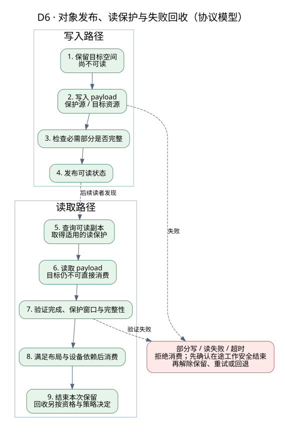
图描述共同协议目标。写入空间分配成功不等于对象已经完整；网络复制完成也不等于上层已发布。读取后还需要验证本次完成和保护条件，再交给消费者。
“结束本次读保护”不等于立即删掉对象。对象可能仍有其他读者，也可能继续作为缓存保留。租约是一种有时间边界的保护方式，引用计数和设备完成事件则解决不同层的问题。
专家追问：写者在分配后退出，如何保证不发布半成品，又不永久泄漏空间？主节点切换后怎样隔离旧写者和过期位置？
D7 · PD 交接与共享缓存
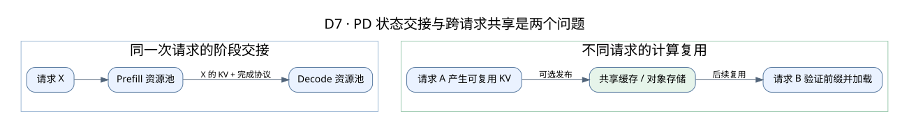
上半部分是一次请求从 Prefill 阶段移交给 Decode 阶段；下半部分是后来的请求复用先前产生的状态。两种机制可以组合，但收益来源、保留时长和失败策略不同。
PD 不一定通过共享对象存储交接；共享缓存也不要求 PD 分离。专家选型应先明确工作负载和 SLO，再决定是否同时引入两种复杂度。
专家追问：Prefill 已成功而 Decode 接管失败时，怎样重试并限制重复计算？接管完成和长期缓存发布是否必须绑定？
D8 · 实现案例：LMCache MP + Mooncake
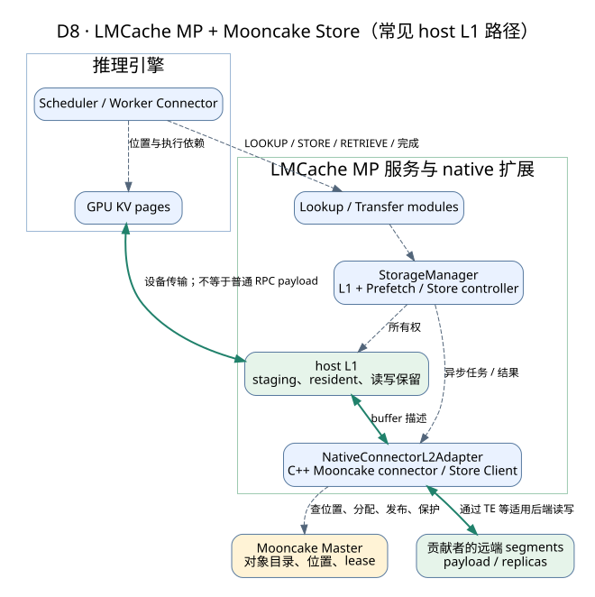
绿色路径是常见 host L1 配置中的数据移动；虚线是请求、资源管理或元数据交互。GPU↔host 的具体发起方与设备映射依赖集成模式，不能把所有 payload 画成普通 RPC 参数。
Store Master 不转发全部 KV 字节；native adapter 也不替推理引擎判断完整的模型语义。这里的“L1”指 LMCache 管理层级，和其他系统把 GPU 称为 L1 的命名不能混用。
专家追问：adapter 本地锁计数能保护到其他客户端吗？Store 的租约是否覆盖整个排队和读取窗口？谁承担 staging 的最坏内存预算？
D9 · 实现案例：保存与恢复的两条完成链
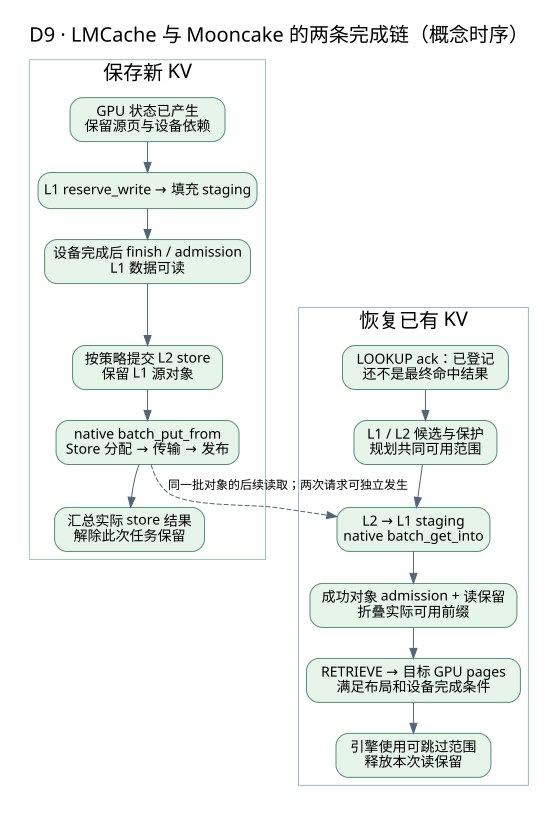
左右两条路径不是一次请求必须连续执行的步骤。写入可发生在请求 A，读取发生在请求 B；其中也可能有本地命中、部分失败和并发重叠。
左侧至少区分 GPU 产生数据、L1 发布、L2 保存三个事件；右侧至少区分 lookup ack、L1 可读、GPU 可消费三个事件。具体批量接口和单对象协议的对应关系见实现正文，不能把图当作逐行调用栈。
专家追问：批量写一半成功时上层如何计数与重试？第二个 chunk 加载失败而第三个成功时，如何重新确定安全复用范围？
D10 · 远端加载超时与租约到期
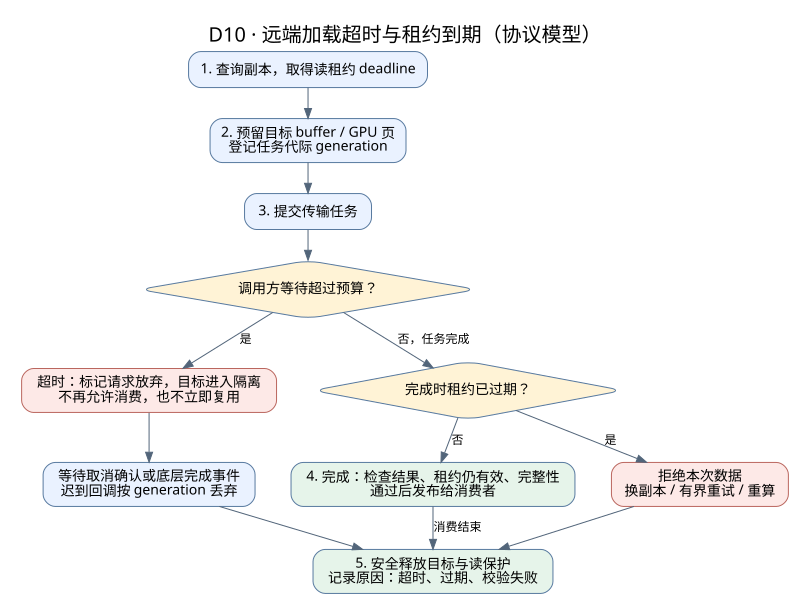
这是面试中最容易答错的一张图。超时是调用方的决定，不是底层任务已经停止的证据：目标 buffer 必须先隔离，等取消确认或完成事件到达后才能复用；迟到的回调靠 generation（代际编号）识别并丢弃。
反过来，传输成功也不等于数据可用。若完成时读租约已过期，地址背后的空间可能已进入回收流程，本次数据必须拒绝。失败原因要分开记录，否则无法区分“租约太短”“网络慢”和“排队过长”。
专家追问：租约时长应按什么估算（排队 + 传输 + 校验 + 时钟误差）？续租的代价是什么？大对象切片后，部分切片完成时如何处理？
D11 · 目录主节点切换与恢复
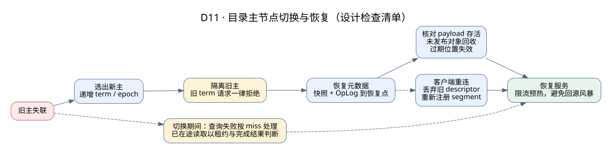
这是设计检查清单，不是某个实现的逐步流程。关键顺序是：先隔离旧主，再恢复状态，再开放服务。新主用递增的 term/epoch 拒绝旧主的迟到请求，否则可能出现两个“主”同时分配空间。
元数据恢复不能凭空恢复丢失的内存 payload。恢复后要核对副本是否仍存活、清理未发布对象、让过期位置失效；客户端丢弃旧 descriptor 后重新取得位置。切换期间的查询失败按 miss 处理，同时限制回源速率，避免缓存层故障把 GPU 重算打满。
专家追问：恢复点之后发布的对象怎么处理？客户端缓存的位置信息何时失效？恢复期间 SLO 怎样保障，谁有权暂停写入？
D12 · 共享 KV 层容量与流量规划
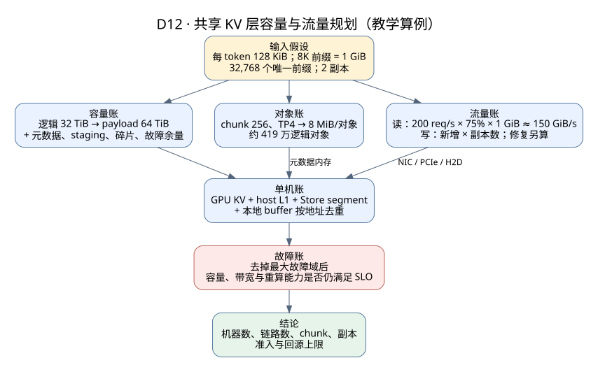
把规划拆成容量、对象、流量三本账，再落到单机资源，最后用“去掉最大故障域”检验。数值是教学输入：每 token 128 KiB 来自 32 层、8 个 KV head、head dim 128、BF16 的示例模型，不代表任何具体部署。
常见错误是只算 payload：忽略副本写流量、修复流量、元数据内存、staging 和在途 buffer，或者把各组件配置的内存直接相加而不按实际地址去重。
专家追问：chunk 从 256 改为 64，哪些账变好、哪些变差？热点集中在 5% 的前缀上时，平均带宽够用为什么仍可能超 SLO？
D13 · 模型 / 格式升级与多租户隔离
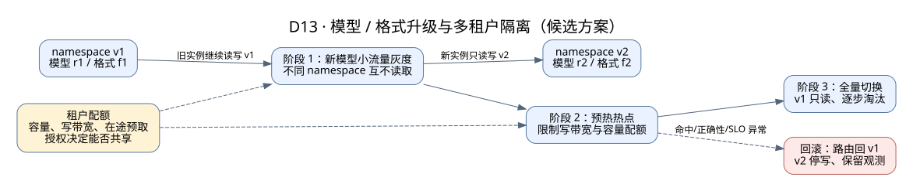
这是一种候选方案：新模型或新格式使用独立 namespace，新旧实例互不读取对方的 KV；先小流量灰度，再预热热点，最后全量切换并让旧 namespace 逐步淘汰。异常时路由回旧版本，新 namespace 停写但保留观测数据。
租户配额约束整个过程：容量、写带宽和在途预取都要有上限；跨租户共享必须由授权决定，namespace 只做隔离标识，不等于访问控制。
专家追问：升级期间命中率骤降带来多少额外 GPU 重算？能否把“格式转换”做成后台任务？大租户预热会不会挤占小租户？
原有框架图与图源维护
继续深入时看：引擎架构图、SGLang 运行图、LMCache 状态与时序图、Mooncake 部署与读写图。
主线 SVG 位于 01-foundations/diagrams/，可直接编辑；原有框架图的 Mermaid 定义写在对应 HTML 中，修改后刷新即可。
维护时同时检查图和相邻文字：箭头到底表示数据还是控制，状态转换需要哪个完成条件，故障路径是否遗漏，版本事实是否有源码依据。